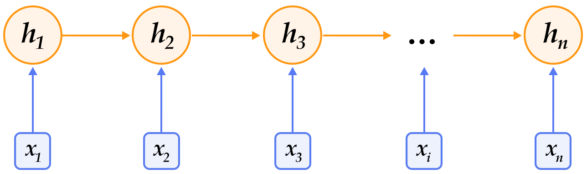
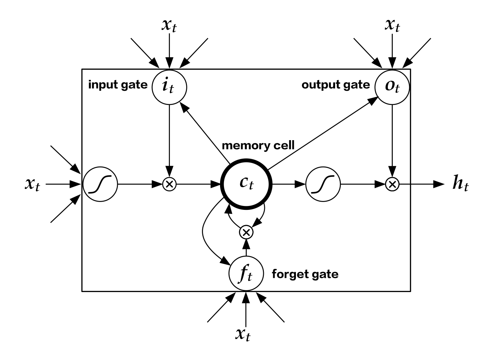
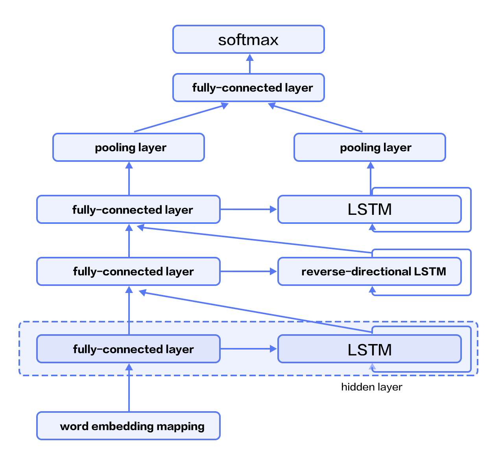

# Sentiment Analysis
The source codes of this section is located at [book/understand_sentiment](https://github.com/PaddlePaddle/book/tree/develop/06.understand_sentiment). First-time users may refer to PaddlePaddle for [Installation guide](https://github.com/PaddlePaddle/book/blob/develop/README.md#running-the-book).
## Background
In natural language processing, sentiment analysis refers to determining the emotion expressed in a piece of text. The text can be a sentence, a paragraph, or a document. Emotion categorization can be binary -- positive/negative or happy/sad -- or in three classes -- positive/neutral/negative. Sentiment analysis is applicable in a wide range of services, such as e-commerce sites like Amazon and Taobao, hospitality services like Airbnb and hotels.com, and movie rating sites like Rotten Tomatoes and IMDB. It can be used to gauge from the reviews how the customers feel about the product. Table 1 illustrates an example of sentiment analysis in movie reviews:
| Movie Review | Category |
| -------- | ----- |
| Best movie of Xiaogang Feng in recent years!| Positive |
| Pretty bad. Feels like a tv-series from a local TV-channel | Negative |
| Politically correct version of Taken ... and boring as Heck| Negative|
|delightful, mesmerizing, and completely unexpected. The plot is nicely designed.|Positive|
Table 1 Sentiment Analysis in Movie Reviews
In natural language processing, sentiment analysis can be categorized as a **Text Classification problem**, i.e., to categorize a piece of text to a specific class. It involves two related tasks: text representation and classification. Before the emergence of deep learning techniques, the mainstream methods for text representation include BOW (*bag of words*) and topic modeling, while the latter contains SVM (*support vector machine*) and LR (*logistic regression*).
The BOW model does not capture all the information in a piece of text, as it ignores syntax and grammar and just treats the text as a set of words. For example, “this movie is extremely bad“ and “boring, dull, and empty work” describe very similar semantic meaning, yet their BOW representations have very little similarity. Furthermore, “the movie is bad“ and “the movie is not bad“ have high similarity with BOW features, but they express completely opposite semantics.
This chapter introduces a deep learning model that handles these issues in BOW. Our model embeds texts into a low-dimensional space and takes word order into consideration. It is an end-to-end framework and it has large performance improvement over traditional methods \[[1](#references)\].
## Model Overview
The model we used in this chapter uses **Convolutional Neural Networks** (**CNNs**) and **Recurrent Neural Networks** (**RNNs**) with some specific extensions.
### Revisit to the Convolutional Neural Networks for Texts (CNN)
The convolutional neural network for texts is introduced in chapter [recommender_system](https://github.com/PaddlePaddle/book/tree/develop/05.recommender_system), here is a brief overview.
CNN mainly contains convolution and pooling operation, with versatile combinations in various applications. We firstly apply the convolution operation: we apply the kernel in each window, extracting features. Convolving by the kernel at every window produces a feature map. Next, we apply *max pooling* over time to represent the whole sentence, which is the maximum element across the feature map. In real applications, we will apply multiple CNN kernels on the sentences. It can be implemented efficiently by concatenating the kernels together as a matrix. Also, we can use CNN kernels with different kernel size. Finally, concatenating the resulting features produces a fixed-length representation, which can be combined with a softmax to form the model for the sentiment analysis problem.
For short texts, the aforementioned CNN model can achieve very high accuracy \[[1](#references)\]. If we want to extract more abstract representations, we may apply a deeper CNN model \[[2](#references),[3](#references)\].
### Recurrent Neural Network (RNN)
RNN is an effective model for sequential data. In terms of computability, the RNN is Turing-complete \[[4](#references)\]. Since NLP is a classical problem of sequential data, the RNN, especially its variant LSTM\[[5](#references)\]), achieves state-of-the-art performance on various NLP tasks, such as language modeling, syntax parsing, POS-tagging, image captioning, dialog, machine translation, and so forth.

Figure 1. An illustration of an unfolded RNN in time.
As shown in Figure 1, we unfold an RNN: at the $t$-th time step, the network takes two inputs: the $t$-th input vector $\vec{x_t}$ and the latent state from the last time-step $\vec{h_{t-1}}$. From those, it computes the latent state of the current step $\vec{h_t}$. This process is repeated until all inputs are consumed. Denoting the RNN as function $f$, it can be formulated as follows:
$$\vec{h_t}=f(\vec{x_t},\vec{h_{t-1}})=\sigma(W_{xh}\vec{x_t}+W_{hh}\vec{h_{t-1}}+\vec{b_h})$$
where $W_{xh}$ is the weight matrix to feed into the latent layer; $W_{hh}$ is the latent-to-latent matrix; $b_h$ is the latent bias and $\sigma$ refers to the $sigmoid$ function.
In NLP, words are often represented as one-hot vectors and then mapped to an embedding. The embedded feature goes through an RNN as input $x_t$ at every time step. Moreover, we can add other layers on top of RNN, such as a deep or stacked RNN. Finally, the last latent state may be used as a feature for sentence classification.
### Long-Short Term Memory (LSTM)
Training an RNN on long sequential data sometimes leads to the gradient vanishing or exploding\[[6](#references)\]. To solve this problem Hochreiter S, Schmidhuber J. (1997) proposed **Long Short Term Memory** (LSTM)\[[5](#references)\]).
Compared to the structure of a simple RNN, an LSTM includes memory cell $c$, input gate $i$, forget gate $f$ and output gate $o$. These gates and memory cells dramatically improve the ability for the network to handle long sequences. We can formulate the **LSTM-RNN**, denoted as a function $F$, as follows：
$$ h_t=F(x_t,h_{t-1})$$
$F$ contains following formulations\[[7](#references)\]：
\begin{align}
i_t & = \sigma(W_{xi}x_t+W_{hi}h_{t-1}+W_{ci}c_{t-1}+b_i)\\\\
f_t & = \sigma(W_{xf}x_t+W_{hf}h_{t-1}+W_{cf}c_{t-1}+b_f)\\\\
c_t & = f_t\odot c_{t-1}+i_t\odot \tanh(W_{xc}x_t+W_{hc}h_{t-1}+b_c)\\\\
o_t & = \sigma(W_{xo}x_t+W_{ho}h_{t-1}+W_{co}c_{t}+b_o)\\\\
h_t & = o_t\odot \tanh(c_t)\\\\
\end{align}
In the equation，$i_t, f_t, c_t, o_t$ stand for input gate, forget gate, memory cell and output gate, respectively. $W$ and $b$ are model parameters, $\tanh$ is a hyperbolic tangent, and $\odot$ denotes an element-wise product operation. The input gate controls the magnitude of the new input into the memory cell $c$; the forget gate controls the memory propagated from the last time step; the output gate controls the magnitutde of the output. The three gates are computed similarly with different parameters, and they influence memory cell $c$ separately, as shown in Figure 2:

Figure 2. LSTM at time step $t$ [7].
LSTM enhances the ability of considering long-term reliance, with the help of memory cell and gate. Similar structures are also proposed in Gated Recurrent Unit (GRU)\[[8](Reference)\] with a simpler design. **The structures are still similar to RNN, though with some modifications (As shown in Figure 2), i.e., latent status depends on input as well as the latent status of the last time step, and the process goes on recurrently until all inputs are consumed:**
$$ h_t=Recrurent(x_t,h_{t-1})$$
where $Recrurent$ is a simple RNN, GRU or LSTM.
### Stacked Bidirectional LSTM
For vanilla LSTM, $h_t$ contains input information from previous time-step $1..t-1$ context. We can also apply an RNN with reverse-direction to take successive context $t+1…n$ into consideration. Combining constructing deep RNN (deeper RNN can contain more abstract and higher level semantic), we can design structures with deep stacked bidirectional LSTM to model sequential data\[[9](#references)\].
As shown in Figure 3 (3-layer RNN), odd/even layers are forward/reverse LSTM. Higher layers of LSTM take lower-layers LSTM as input, and the top-layer LSTM produces a fixed length vector by max-pooling (this representation considers contexts from previous and successive words for higher-level abstractions). Finally, we concatenate the output to a softmax layer for classification.

Figure 3. Stacked Bidirectional LSTM for NLP modeling.
## Dataset
We use [IMDB](http://ai.stanford.edu/%7Eamaas/data/sentiment/) dataset for sentiment analysis in this tutorial, which consists of 50,000 movie reviews split evenly into a 25k train set and a 25k test set. In the labeled train/test sets, a negative review has a score <= 4 out of 10, and a positive review has a score >= 7 out of 10.
`paddle.datasets` package encapsulates multiple public datasets, including `cifar`, `imdb`, `mnist`, `moivelens`, and `wmt14`, etc. There's no need for us to manually download and preprocess IMDB.
After issuing a command `python train.py`, training will start immediately. The details will be unpacked by the following sessions to see how it works.
## Model Structure
### Initialize PaddlePaddle
We must import and initialize PaddlePaddle (enable/disable GPU, set the number of trainers, etc).
```python
import sys
import paddle.v2 as paddle
# PaddlePaddle init
paddle.init(use_gpu=False, trainer_count=1)
```
As alluded to in section [Model Overview](#model-overview), here we provide the implementations of both Text CNN and Stacked-bidirectional LSTM models.
### Text Convolution Neural Network (Text CNN)
We create a neural network `convolution_net` as the following snippet code.
Note: `paddle.networks.sequence_conv_pool` includes both convolution and pooling layer operations.
```python
def convolution_net(input_dim, class_dim=2, emb_dim=128, hid_dim=128):
data = paddle.layer.data("word",
paddle.data_type.integer_value_sequence(input_dim))
emb = paddle.layer.embedding(input=data, size=emb_dim)
conv_3 = paddle.networks.sequence_conv_pool(
input=emb, context_len=3, hidden_size=hid_dim)
conv_4 = paddle.networks.sequence_conv_pool(
input=emb, context_len=4, hidden_size=hid_dim)
output = paddle.layer.fc(input=[conv_3, conv_4],
size=class_dim,
act=paddle.activation.Softmax())
lbl = paddle.layer.data("label", paddle.data_type.integer_value(2))
cost = paddle.layer.classification_cost(input=output, label=lbl)
return cost, output
```
1. Define input data and its dimension
Parameter `input_dim` denotes the dictionary size, and `class_dim` is the number of categories. In `convolution_net`, the input to the network is defined in `paddle.layer.data`.
1. Define Classifier
The above Text CNN network extracts high-level features and maps them to a vector of the same size as the categories. `paddle.activation.Softmax` function or classifier is then used for calculating the probability of the sentence belonging to each category.
1. Define Loss Function
In the context of supervised learning, labels of the training set are defined in `paddle.layer.data`, too. During training, cross-entropy is used as loss function in `paddle.layer.classification_cost` and as the output of the network; During testing, the outputs are the probabilities calculated in the classifier.
#### Stacked bidirectional LSTM
We create a neural network `stacked_lstm_net` as below.
```python
def stacked_lstm_net(input_dim,
class_dim=2,
emb_dim=128,
hid_dim=512,
stacked_num=3):
"""
A Wrapper for sentiment classification task.
This network uses a bi-directional recurrent network,
consisting of three LSTM layers. This configuration is
motivated from the following paper, but uses few layers.
http://www.aclweb.org/anthology/P15-1109
input_dim: here is word dictionary dimension.
class_dim: number of categories.
emb_dim: dimension of word embedding.
hid_dim: dimension of hidden layer.
stacked_num: number of stacked lstm-hidden layer.
"""
assert stacked_num % 2 == 1
fc_para_attr = paddle.attr.Param(learning_rate=1e-3)
lstm_para_attr = paddle.attr.Param(initial_std=0., learning_rate=1.)
para_attr = [fc_para_attr, lstm_para_attr]
bias_attr = paddle.attr.Param(initial_std=0., l2_rate=0.)
relu = paddle.activation.Relu()
linear = paddle.activation.Linear()
data = paddle.layer.data("word",
paddle.data_type.integer_value_sequence(input_dim))
emb = paddle.layer.embedding(input=data, size=emb_dim)
fc1 = paddle.layer.fc(input=emb,
size=hid_dim,
act=linear,
bias_attr=bias_attr)
lstm1 = paddle.layer.lstmemory(
input=fc1, act=relu, bias_attr=bias_attr)
inputs = [fc1, lstm1]
for i in range(2, stacked_num + 1):
fc = paddle.layer.fc(input=inputs,
size=hid_dim,
act=linear,
param_attr=para_attr,
bias_attr=bias_attr)
lstm = paddle.layer.lstmemory(
input=fc,
reverse=(i % 2) == 0,
act=relu,
bias_attr=bias_attr)
inputs = [fc, lstm]
fc_last = paddle.layer.pooling(
input=inputs[0], pooling_type=paddle.pooling.Max())
lstm_last = paddle.layer.pooling(
input=inputs[1], pooling_type=paddle.pooling.Max())
output = paddle.layer.fc(input=[fc_last, lstm_last],
size=class_dim,
act=paddle.activation.Softmax(),
bias_attr=bias_attr,
param_attr=para_attr)
lbl = paddle.layer.data("label", paddle.data_type.integer_value(2))
cost = paddle.layer.classification_cost(input=output, label=lbl)
return cost, output
```
1. Define input data and its dimension
Parameter `input_dim` denotes the dictionary size, and `class_dim` is the number of categories. In `stacked_lstm_net`, the input to the network is defined in `paddle.layer.data`.
1. Define Classifier
The above stacked bidirectional LSTM network extracts high-level features and maps them to a vector of the same size as the categories. `paddle.activation.Softmax` function or classifier is then used for calculating the probability of the sentence belonging to each category.
1. Define Loss Function
In the context of supervised learning, labels of the training set are defined in `paddle.layer.data`, too. During training, cross-entropy is used as loss function in `paddle.layer.classification_cost` and as the output of the network; During testing, the outputs are the probabilities calculated in the classifier.
To reiterate, we can either invoke `convolution_net` or `stacked_lstm_net`.
```python
word_dict = paddle.dataset.imdb.word_dict()
dict_dim = len(word_dict)
class_dim = 2
# option 1
[cost, output] = convolution_net(dict_dim, class_dim=class_dim)
# option 2
# [cost, output] = stacked_lstm_net(dict_dim, class_dim=class_dim, stacked_num=3)
```
## Model Training
### Define Parameters
First, we create the model parameters according to the previous model configuration `cost`.
```python
# create parameters
parameters = paddle.parameters.create(cost)
```
### Create Trainer
Before jumping into creating a training module, algorithm setting is also necessary.
Here we specified `Adam` optimization algorithm via `paddle.optimizer`.
```python
# create optimizer
adam_optimizer = paddle.optimizer.Adam(
learning_rate=2e-3,
regularization=paddle.optimizer.L2Regularization(rate=8e-4),
model_average=paddle.optimizer.ModelAverage(average_window=0.5))
# create trainer
trainer = paddle.trainer.SGD(cost=cost,
parameters=parameters,
update_equation=adam_optimizer)
```
### Training
`paddle.dataset.imdb.train()` will yield records during each pass, after shuffling, a batch input is generated for training.
```python
train_reader = paddle.batch(
paddle.reader.shuffle(
lambda: paddle.dataset.imdb.train(word_dict), buf_size=1000),
batch_size=100)
test_reader = paddle.batch(
lambda: paddle.dataset.imdb.test(word_dict), batch_size=100)
```
`feeding` is devoted to specifying the correspondence between each yield record and `paddle.layer.data`. For instance, the first column of data generated by `paddle.dataset.imdb.train()` corresponds to `word` feature.
```python
feeding = {'word': 0, 'label': 1}
```
Callback function `event_handler` will be invoked to track training progress when a pre-defined event happens.
```python
def event_handler(event):
if isinstance(event, paddle.event.EndIteration):
if event.batch_id % 100 == 0:
print "\nPass %d, Batch %d, Cost %f, %s" % (
event.pass_id, event.batch_id, event.cost, event.metrics)
else:
sys.stdout.write('.')
sys.stdout.flush()
if isinstance(event, paddle.event.EndPass):
with open('./params_pass_%d.tar' % event.pass_id, 'w') as f:
trainer.save_parameter_to_tar(f)
result = trainer.test(reader=test_reader, feeding=feeding)
print "\nTest with Pass %d, %s" % (event.pass_id, result.metrics)
```
Finally, we can invoke `trainer.train` to start training:
```python
trainer.train(
reader=train_reader,
event_handler=event_handler,
feeding=feeding,
num_passes=10)
```
## Conclusion
In this chapter, we use sentiment analysis as an example to introduce applying deep learning models on end-to-end short text classification, as well as how to use PaddlePaddle to implement the model. Meanwhile, we briefly introduce two models for text processing: CNN and RNN. In following chapters, we will see how these models can be applied in other tasks.
## References
1. Kim Y. [Convolutional neural networks for sentence classification](http://arxiv.org/pdf/1408.5882)[J]. arXiv preprint arXiv:1408.5882, 2014.
2. Kalchbrenner N, Grefenstette E, Blunsom P. [A convolutional neural network for modeling sentences](http://arxiv.org/pdf/1404.2188.pdf?utm_medium=App.net&utm_source=PourOver)[J]. arXiv preprint arXiv:1404.2188, 2014.
3. Yann N. Dauphin, et al. [Language Modeling with Gated Convolutional Networks](https://arxiv.org/pdf/1612.08083v1.pdf)[J] arXiv preprint arXiv:1612.08083, 2016.
4. Siegelmann H T, Sontag E D. [On the computational power of neural nets](http://research.cs.queensu.ca/home/akl/cisc879/papers/SELECTED_PAPERS_FROM_VARIOUS_SOURCES/05070215382317071.pdf)[C]//Proceedings of the fifth annual workshop on Computational learning theory. ACM, 1992: 440-449.
5. Hochreiter S, Schmidhuber J. [Long short-term memory](http://web.eecs.utk.edu/~itamar/courses/ECE-692/Bobby_paper1.pdf)[J]. Neural computation, 1997, 9(8): 1735-1780.
6. Bengio Y, Simard P, Frasconi P. [Learning long-term dependencies with gradient descent is difficult](http://www-dsi.ing.unifi.it/~paolo/ps/tnn-94-gradient.pdf)[J]. IEEE transactions on neural networks, 1994, 5(2): 157-166.
7. Graves A. [Generating sequences with recurrent neural networks](http://arxiv.org/pdf/1308.0850)[J]. arXiv preprint arXiv:1308.0850, 2013.
8. Cho K, Van Merriënboer B, Gulcehre C, et al. [Learning phrase representations using RNN encoder-decoder for statistical machine translation](http://arxiv.org/pdf/1406.1078)[J]. arXiv preprint arXiv:1406.1078, 2014.
9. Zhou J, Xu W. [End-to-end learning of semantic role labeling using recurrent neural networks](http://www.aclweb.org/anthology/P/P15/P15-1109.pdf)[C]//Proceedings of the Annual Meeting of the Association for Computational Linguistics. 2015.
This tutorial is contributed by
PaddlePaddle, and licensed under a
Creative Commons Attribution-ShareAlike 4.0 International License.